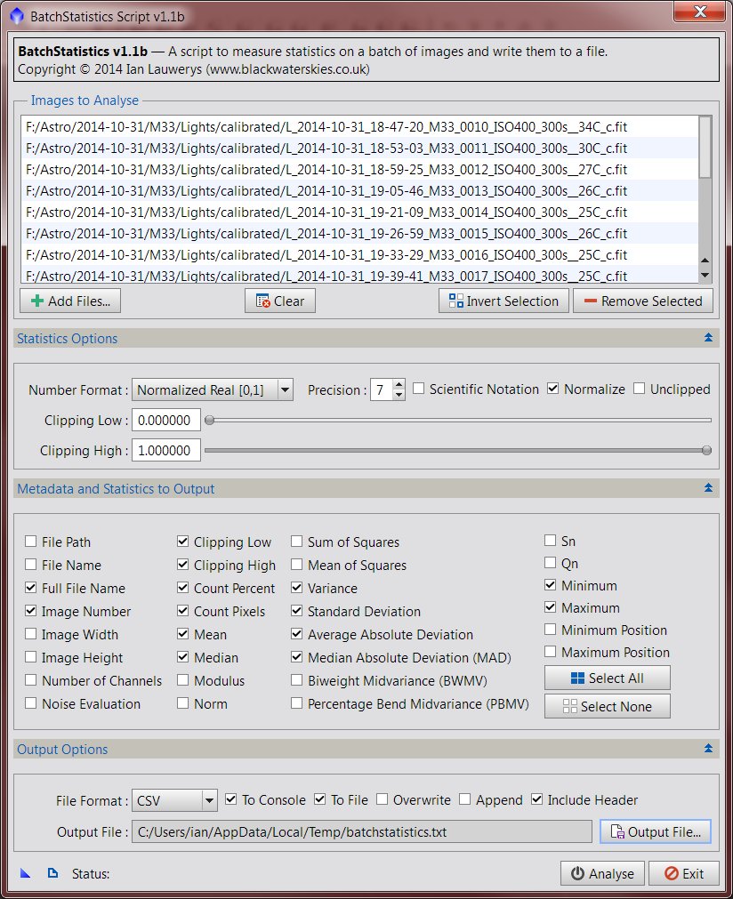

Keywords: batch statistics, batch, statistics, noise evaluation, noise, spreadsheet, excel, csv, text, delimited, export
1 Description
[hide]

The BatchStatistics script enables measurement of statistics on a batch of images. Results are output to the console and/or a text file in a variety of delimited formats such as CSV, suitable for import to spreadsheets and other external data analysis tools. All statistics and measures in the Statistics process and NoiseEvaluation script are available for output.
Batchstatistics supports multi-image file formats and any number of channels per image.
1.1 Images to Analyse
- Click the Add button to choose image files to analyse. Any image file format supported by PixInsight should be suitable. The script will support images with multiple channels (RGB, etc.) and it should also support multi-image file formats such as FITS. (Please note that his latter feature is untested by me so please report any problems via this thread). Note that the dialog can be resized vertically to show more list entries and horizontally to show long file names by dragging its edges as required.
Important: When working with multi-channel images, it is best to try to work with sets of images that have the same number of channels and in the same order. BatchStatistics will process images with any number of channels, but will warn you via the PixInsight console if the current image contains a different number of channels than the previous one. Given that the objective is to output to a file format containing columns of data, changing the number of channels between images will mean that the column headers do not always correspond to the data rows. (Note that if you append results to an existing output file, BatchStatistics has no way to know how many columns of data it contains, so the operator is responsible for doing the right thing!)
BatchStatistics does not currently support working with open image views, previews, etc.
- The Clear, Invert Selection and Remove Selected buttons function in the same manner as other PixInsight scripts and processes should you need to amend the list.
1.2 Statistics Options
- The Number Format combo box functions in the same manner as the existing Statistics process. You may output results using PixInsight's native Normalized Real format, or converted to Integer bit depth to match your camera's output format (typically 16 bit for CCD cameras or 12 / 14 bit for DSLR cameras).
- The Precision spin box allows you to choose the number of digits in Normalized Real and Scientific formats between 0 and 17 places.
- The Scientific Notation check box functions in the same manner as the existing Statistics process. It allows you to output Normalized Real format numbers in scientific notation.
- The Normalize check box functions in the same manner as the existing Statistics process. It makes all scale estimates consistent with the standard deviation of a normal distribution.
- The Unclipped check box functions in the same manner as the existing Statistics process. By default, statistics are computed by clipping (ignoring) pixels with values of 0 ("black") and 1 (fully saturated) when this box is unchecked. If you change the Clipping Low and Clipping High controls, then pixels with values outside the chosen clipping range will be ignored instead. By checking the Unclipped check box, statistics are computed for all pixels in the image ignoring any clipping range.
- Clipping Low and Clipping High: If the Unclipped check box is unchecked, any pixels with values less than Clipping Low or greater than Clipping High will be excluded from statistics calculations.
1.4 Output Options
- The File Format combo box allows you to select various delimited output formats from Tab, Pipe, Colon, Space, Comma or CSV.
Note: Any data value which contains the delimiter value will be enclosed in double quotes (" "). In the case of the CSV format, the delimiter is the comma character and all data values are enclosed in double quotes. Line endings are the MS-DOS CR LF format as per RFC 4180.
- The To Console checkbox outputs header and result rows to the PixInsight Console. Due to informational messages (e.g. loading of images) this is not as useful as it could be as it is not possible to cut and paste a block of results directly from the console to your application, but it may be of use for single images (vs. cutting and pasting individual data values from the Statistics process).
Note: MS Excel's Text to Columns option is your friend when cutting and pasting from the console.
- The To File checkbox outputs header and result rows to a text file.
- The Overwrite checkbox overwrites any existing text file of the same name as that specified in Output File.
Important: No warning will be given when overwriting (this is by design for future developments in re-using script instances) so please be careful!
- The Append checkbox appends results to any existing text file of the same name as that specified in Output File or creates a new file if one does not exist.
- The Include Header checkbox outputs a row of column headers appropriate to the first image in the file list. Please see the note above about working with images containing varying numbers of channels.
Note: Headers are not written to existing files when appending, only to new ones if created (this is by design to ensure that each output file only contains a single header row at the top).
- The Output File... button allows you to select a folder and select/specify a file name for output of results. The chosen file name is displayed in the Output File text box.
Copyright © 2014 Ian Lauwerys. All Rights Reserved.